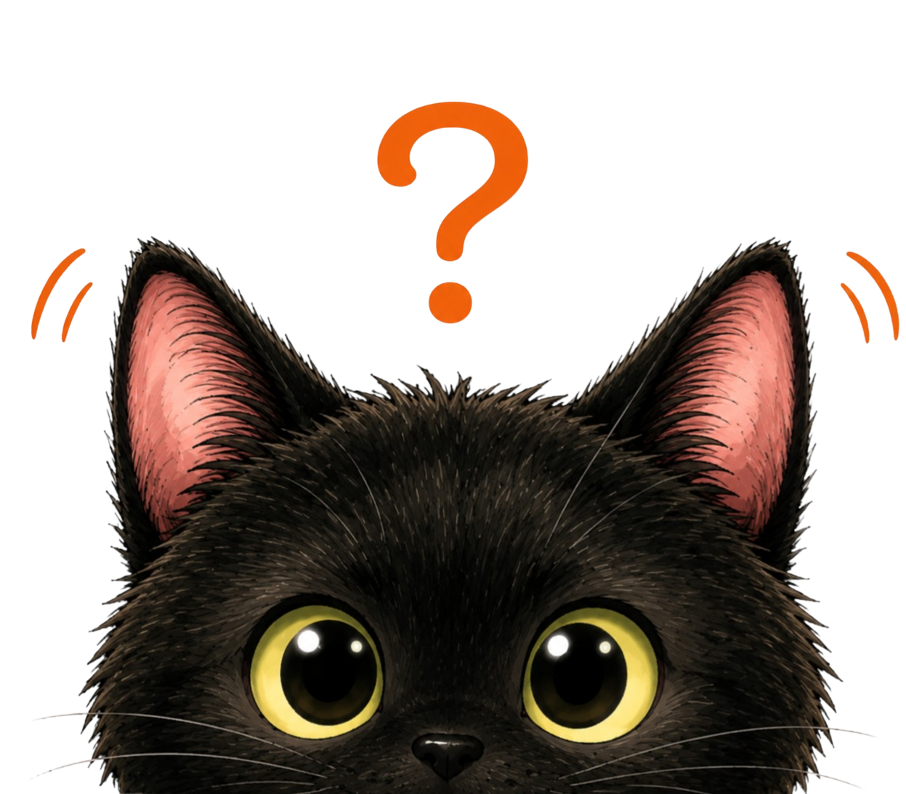

‹ ホームへ戻る

耳を育てる
先生の三味線音源で音感を育てよう
耳レベル
Lv.1
累計 0 問正解
三味線耳認定！
すべてのゲームをクリアしました
ゲームを選んでね
すべて teacher 音源を使います。
1
調子を当てる
本調子・二上り・三下りを聴き分ける
›
2
音を合わせる
音を上下して基準音に近づける
›
‹ ゲーム選択へ
調子を当てる
コースを選んでください
基本
本数を表示
調子だけを当てる
応用
本数も非表示
調子と本数を当てる
‹ コース選択へ
基本
問題
1 / 10
正解
0
連続
0
音を聴いてみよう
再生してください
♪ 三本の糸を聴く
調子を選ぶ
本調子
二上り
三下り
一の糸の本数
回答する
次の問題へ
‹ ゲーム選択へ
問題
1 / 10
正解
0
連続
0
残り
20
秒
基準音に合わせよう
二つの音を聴き比べてください
♪ 基準音
♪ 自分の音
♪ 聴き比べる
大きく下げる
少し下げる
少し上げる
大きく上げる
この音で決定
次の問題へ
ゲーム終了！
正解数
最高連続正解
もう一度
ゲームを選ぶ
ホームへ戻る